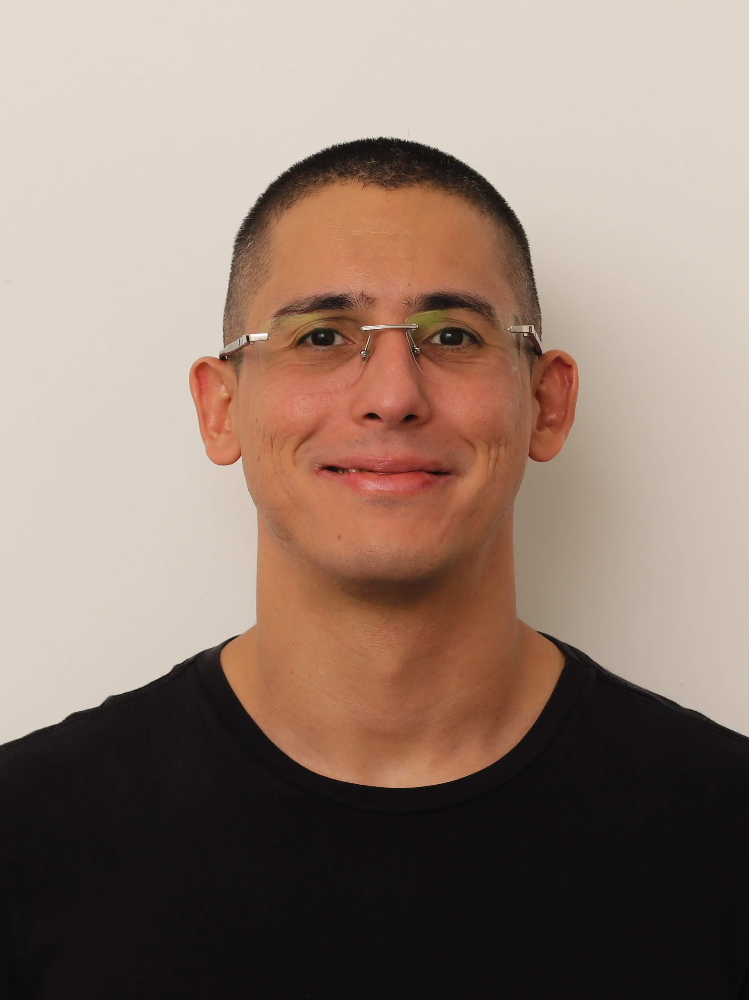

 Sou Raphael Melo, natural de Campina Grande - PB, tenho 34 anos de idade e sou casado, mas ainda não tenho filhos. Além disso, sou engenheiro e nas horas vagas pratico Jiu-Jitsu, atualmente sou faixa roxa.
Devido a meu trabalho como professor e pesquisador no Pólo de Inovação do IFPB senti a necessidade de buscar uma formação na área de tecnologia da informação, especificamente Ciência de Dados, e desde novembro de 2022 ingressei na UNINTER para adquirir estes novos conhecimentos e poder agregar conhecimento aos meus alunos em sala de aula, seja nos cursos técnicos regulares, cursos FIC's, graduação e até mesmo no mestrado.
No tatame eu encontro paz e companheirismo.